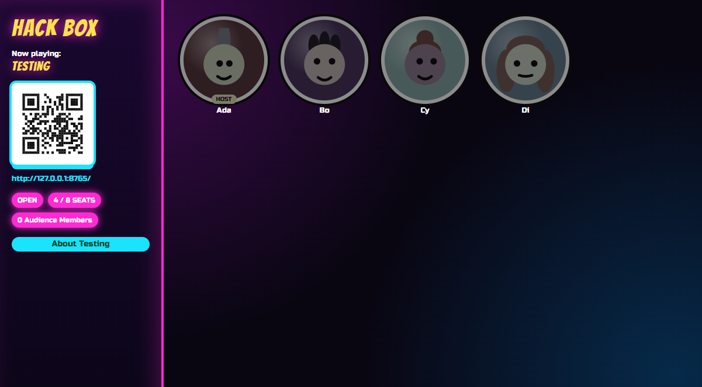
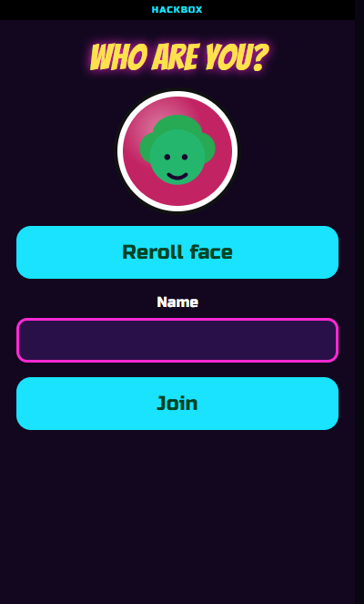

Browser source ready
The board is a clean web page at /board. Capture it like any other overlay. Neon dark mode reads well on stream without extra styling.
Grab Bag is a self-hosted party host. Put the game on a browser source or second monitor, drop the join QR on screen, and let viewers on their phones play with you—not just watch.

/board in OBS or on a capture PC. Phones scan the QR—no app store, no room code on someone else's site.Everything is built around one room you control on your machine. You run the host, you pick the game, chat joins from the link you show.
The board is a clean web page at /board. Capture it like any other overlay. Neon dark mode reads well on stream without extra styling.
Viewers join with a face, a name, and one tap. No install friction while you're live. Mods can sit in empty seats or you can invite co-hosts into chairs.
No cloud account and no matchmaking service. The PC on your desk is the server. When you close it, the room ends—good for controlled subscriber nights.
Same Wi‑Fi is the happy path for collab streams in one house. Off-network viewers can join through a tunnel you run; you choose when to expose it.
Claim host with your admin password, then Load, Start, Pause, and Stop from your phone while you keep talking to chat.
Rotate judges, run voting rounds, and let audience points matter in Quick Quips when you want lurkers in on the bit—not just the people on cam.
Two party formats ship today. More can land as the host stabilizes. Pick one, load it from your host phone, and read the on-board how-to while chat fills seats.
Cards Against Humanity-style rounds built for a loud stream. One seated player judges; everyone else fills the prompt from their hand.
Mad-libs energy with voting. Writers fill rotating prompts; the room picks favorites. Built for collaborative comedy on cam.
You need a Windows PC that stays on, a capture path for the board, and phones (or a tunnel) for players. This is the same flow as a living-room night—just pointed at your audience.
/board on the machine you capture. Add it as a browser source or push it to a side monitor for IRL co-streams.
127.0.0.1—that only works on your PC.

Clone the repo, run with Go 1.26+, or build grabbag.exe on Windows. How-to and Game API docs are static pages on this site—no Grab Bag process required to read them.
Again: alpha software. Expect breakage, missing polish, and API movement. Back up your admin password—there is no reset in the binary yet.